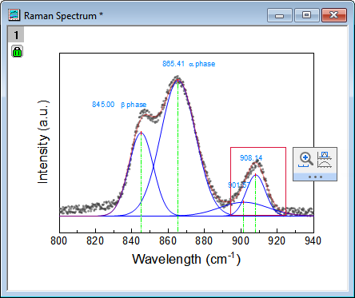
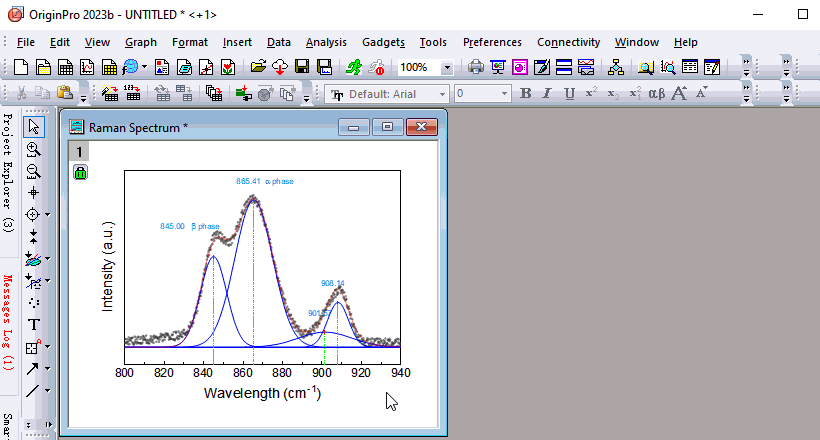
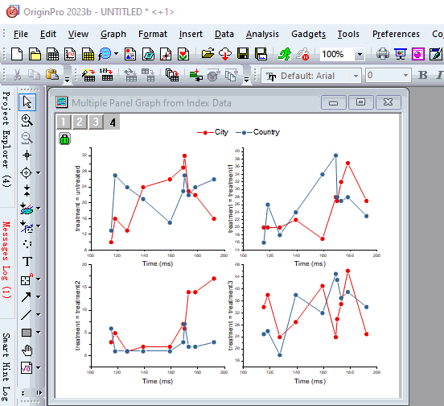
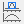
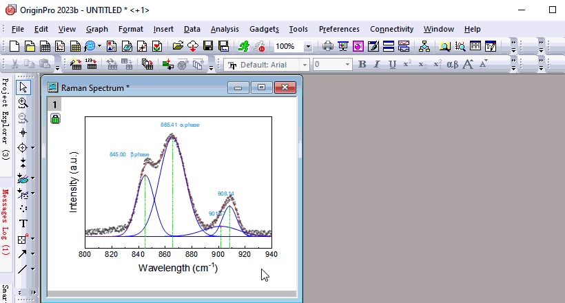

Minisymbolleiste: Zooombereich auswählen
Selection-Region-to-Zoom
Wenn der Cursor sich im Modus Zeiger  befindet, wählen Sie einen rechteckigen Bereich (roter Rahmen) innerhalb eines Diagrammlayers aus. Im Anschluss wird die Minisymbolleiste mit den Hilfsmitteln Achsenskalierung vergrößern und In separater Grafik vergrößern angezeigt.
befindet, wählen Sie einen rechteckigen Bereich (roter Rahmen) innerhalb eines Diagrammlayers aus. Im Anschluss wird die Minisymbolleiste mit den Hilfsmitteln Achsenskalierung vergrößern und In separater Grafik vergrößern angezeigt.
- 
Achsenskalierung vergrößern
- Durch Auswahl der Schaltfläche Achsenskalierung vergrößern
 in der Minisymbolleiste wird der Diagrammlayer im ausgewählten Bereich skaliert.
in der Minisymbolleiste wird der Diagrammlayer im ausgewählten Bereich skaliert.
- Um zur ursprünglichen Skalierung zurückzukehren, können Sie im Menü Bearbeiten: Vergrößern/Verkleinern rückgängig machen oder drücken Sie Strg + Z, um die vorherige Aktion rückgängig zu machen.
- 
- Wenn Sie in einer Grafik mit mehreren Layern Skalierung in einem Layer anwenden, folgen anderen Layer dieser Aktion.
- 
In separater Grafik vergrößern
- Durch die Auswahl der Schaltfläche In separater Grafik vergrößern  auf der Minisymbolleiste wird ein neues Diagrammfenster mit dem Namen Vergrößert für den ausgewählten Bereich hinzugefügt.
- Wenn Sie den rechteckigen Bereich per Drag&Drop verschieben, wird die Skalierung des neuen Diagrammfensters automatisch aktualisiert.
- Löschen Sie den rechteckigen Bereich im ursprünglichen Diagramm. Das neue Diagrammfenster wird ebenfalls gelöscht.
- 
- Klicken Sie mit der rechten Maustaste auf den rechteckigen Bereich, um Duplizieren auszuwählen. Verschieben Sie das Rechteck zu dem Bereich, der Sie interessiert.